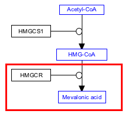

Background
Cholesterol is a waxy steroid metabolite found in the cell membranes and transported in the blood plasma of all animals. It is an essential structural component of mammalian cell membranes, where it is required to establish proper membrane permeability and fluidity. In addition, cholesterol is an important component for the manufacture of bile acids, steroid hormones, and several fat-soluble vitamins. Cholesterol is the principal sterol synthesized by animals, but small quantities are synthesized in other eukaryotes, such as plants and fungi. It is almost completely absent among prokaryotes, which include bacteria. Source: Wikipedia
Your Mission
Complete the second step of the Cholesterol biosynthesis pathway, the conversion of HMG-CoA to Mevalonic acid, catalyzed by HMGCR. The complete reaction corresponds to the highlighted area in this figure:
- To complete this challenge, click the "Launch Editor" button below. You will receive your challenge as a file named "WikiPathwaysAcademy-Challenge.jnlp". Open it to see your control panel.
-
Perform the challenge tasks...
- Select Metabolite (“Met”) from the Data Node palette in the Objects tab
- Click on canvas to place the metabolite node
- Double-click on node to open its properties
- Search for “mevalonic acid”; Choose any of the entries that just say “mevalonic acid”; Click OK
- (Optional) Resize nodes or update node labels
- Select the Conversion arrow from the MIM interactions palette in the Objects tab
- Drag and drop anywhere on canvas to create the interaction
- Drag the plain end (start) of the interaction over a target area on the starting metabolite node (HMG-CoA)
- Drag the arrow end (end) of the interaction over a target area on the ending metabolite node (mevalonic acid)
- Right-click on the conversion arrow and select “Add anchor”
- Select Gene from the Data Node palette in the Objects tab
- Click on canvas to place the gene node
- Double-click on node to open its properties
- Search for “HMGCR”; Choose any of the entries that just say “HMGCR”; Click OK
- Select the Catalysis arrow from the MIM interactions palette in the Objects tab
- Drag and drop anywhere on canvas to create the interaction
- Drag the plain end (start) of the interaction over a target area on the enzyme node
- Drag the catalysis end (end) of the interaction over the anchor on the conversion line
- (Optional) Align nodes using toolbar actions
- Done!
- When you have completed the challenge, save your work as a GPML file under File > Save As.
- Drag-n-drop the GPML file below to submit.

Click to download solution file (For Testing Only)